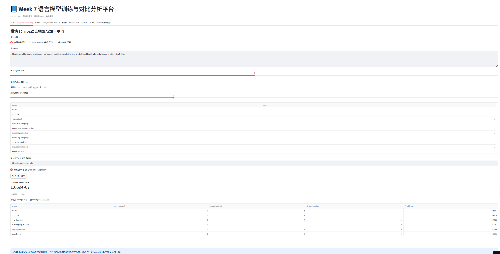
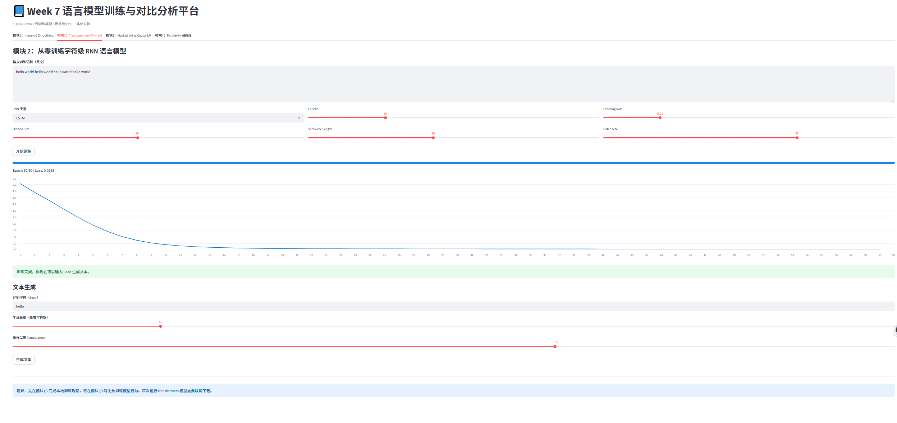
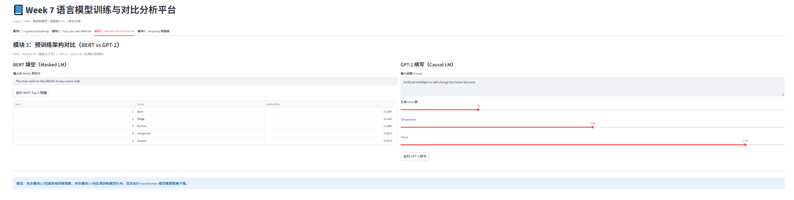
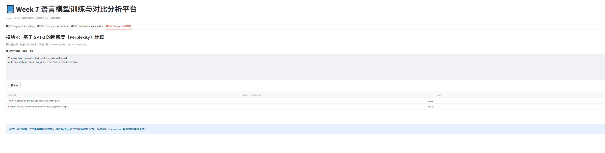

Streamlit + nltk + torch + transformers 综合实验报告
| 报告人姓名 | 裘典儿 | 学号 | 2025213456 |
|---|---|---|---|
| 实验日期 | 2026-04-16 | 工具/模型 | Codex（GPT-5.4） |
| 线上地址 | https://qiudianer-o56yrlk6wndom2xigbeh8k.streamlit.app/ | ||
支持 Reuters/手动语料，支持 2/3/4-gram，计算句子联合概率并展示平滑前后差异。
字符级 RNN/LSTM，自定义语料与超参数，训练过程动态 Loss 曲线，训练后按 Seed 生成文本。
BERT 完成 [MASK] Top-5 预测；GPT-2 完成前缀续写，直观对比双向建模与单向自回归。
基于 GPT-2 计算 Cross-Entropy Loss，并输出 PPL=exp(loss) 表格。
1. 未见 n-gram 在未平滑模型中会导致联合概率归零；加一平滑后概率可恢复为非零。
2. 规律文本训练时，RNN/LSTM 的 Loss 会持续下降，生成文本可复现输入模式。
3. BERT 可利用双向上下文完成填空，GPT-2 严格遵循左到右续写。
4. 通顺句通常拥有更低 PPL，随机乱码句通常拥有更高 PPL。该现象与课程结论一致。




请基于 Streamlit 构建“语言模型训练与对比分析平台”，包含四个标签页： 1) n-gram 与 Add-one Smoothing：可输入语料，构建 Trigram/Bigram，计算句子联合概率并对比平滑前后结果； 2) 从零训练字符级 RNN/LSTM：支持 Hidden Size、Epochs、Learning Rate 调参，实时显示 Loss 曲线，并基于 Seed 生成文本； 3) 预训练模型对比：使用 bert-base-uncased 完成 [MASK] Top-5 预测，使用 gpt2 执行前缀续写； 4) PPL 计算：基于 GPT-2 计算多句文本的 Cross-Entropy Loss 与 PPL=exp(Loss)，表格展示结果。
核心代码：app.py；网页报告：Week7_实验报告_可视化.html；文本报告：Week7_实验报告.md；依赖：requirements.txt。